LLM-Harness · 归档于 2026-11-22
Computer-Use Agents
Computer-use agent 怎么工作、为什么又慢又贵、靠什么变快
arXivPDF OSWorld-HumanHCU Screenshots or Tools?PACE Code
归档到 LLM/Harness：讲的是 agent loop 本身，和它的 context、action 怎么设计。
TL;DR · 对应你的三个问题
- 1 · Loop
- 每一步：截图 → 大模型想 → 定位成坐标 → 执行 → 检查。产品级 CUA 和“截图问点哪”是同一个 loop。
- 2 · Cost
- 慢在大模型调用（planning + reflection 占时间 76–96%），每步还带着全部历史，步数是人的 2.7–4.3×。
- 3 · Fix
- 四个省法：少看、少记、每步多做、少想。HCU 一组数：步数 −29.80%，input token −56.85%，时间 −29.85%。
Problem · 问题 2
Vanilla loop 每一步都付全价：50 步，40 多分钟
Running example · OSWorld 的一个 OS 任务
建 SSH 用户：创建一个 SSH 用户，给定用户名和密码，只能访问指定文件夹 → 想要：几步做完。Agent S2 做成了，但用了 50 步、40 多分钟；OS 类任务人平均 3.9 步。
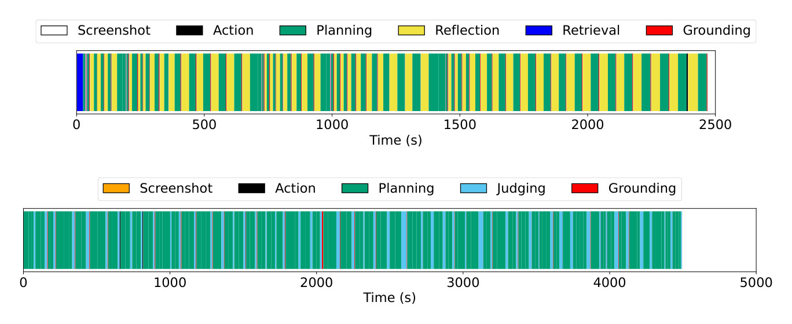
怎么读这张图
- 上条（Agent S2，横轴到 2,500 s）：绿 = Planning，黄 = Reflection，都是大模型调用，铺满整条。
- 细线：蓝 = Retrieval，只在开头一次；红 = Grounding、黑 = Action、白 = Screenshot 几乎看不见。
- 下条（GTA1，横轴到 5,000 s）：同一题 54 步，时间几乎翻倍。绿 = 并行 planning，浅蓝 = Judging。
flowchart TD IN["例子输入
建 SSH 用户"]:::example --> L["Vanilla loop
截图 → 大模型 → 一个动作"] L --> A["每步调大模型
plan + reflect"] L --> B["历史全带上
截图越攒越多"] L --> C["一步一个动作
点、敲、回车"] L --> D["点错不回退
接着点同一处"] A --> AX["大模型占大头
53.5% + 33.6%"]:::gap B --> BX["越往后越慢
第 10 步带 9 张图"]:::gap C --> CX["步数太多
50 步 vs 人 3.9"]:::gap D --> DX["原地打转
72 步白走 *"]:::gap
53.5% + 33.6% 是 S2 在 39 个任务上的平均（Table 1）；3.9 是 OS 类任务的人工平均步数（Table 4），不是这一题的数。* 打转来自另一题：GTA1 做 Chrome 任务 bb5e4c0d（把 Bing 设为默认搜索引擎），到 100 步上限失败，10 个 loop 共 72 步白走，其中一个 loop 花了 $8.47、27 分钟（§3.4）。
根本问题：成本 ≈ 步数 × 每步的大模型调用 × 每次调用带的 context，三项一起涨（我的概括）。 切入点：三项各自怎么降，就是后面的四个 stage。
Related work · 四类 CUA，和 vanilla harness 差在哪
| 相关工作 | 解决什么 | 怎么解决 | 和 vanilla loop 的区别 |
|---|---|---|---|
| 同一问题 · 操作 GUI 的四种做法 | |||
| Native CUA 模型 Claude computer use、OpenAI CUA、UI-TARS | 通用 VLM 点不准 | 训练过的模型直接出坐标和动作 | loop 不变；多了训出来的 grounding 和 batch、zoom 这类 action |
| Planner + grounder 框架 Agent S2、GTA1、Jedi | 一个模型又想又点，两头都不精 | 大模型 plan，小模型出坐标，再加 reflection 或 judge | 每步调用更多（GTA1 每步 4 个并行 planning call）：更准，也更慢更贵 |
| 读文本的 agent Agent-E、FocusAgent | 像素难读、难定位 | 读 DOM 或 accessibility tree，按元素操作 | 不用 grounding；但树很长（raw DOM 可到 800k tokens），要先裁 |
| Hybrid CoAct-1、UltraCUA、HCU | 有些事点起来就是慢 | GUI 之外加 code、tool、AX 通道，模型自己选 | 能不点就不点：一次调用顶好几步 GUI |
| 相似做法 · 别的问题 | |||
| LLM serving 加速 prefix caching、speculative decoding | 任何多轮 agent 的单步延迟 | 缓存不变的 prompt 前缀；猜着解码 | 不改 loop，只让每次调用便宜；CUA 要配合着不去动前缀 |
来源：OSWorld-Human §2.1–2.2、§3、§3.5、§5.3；综述 §3.1、§5.1、§6.2。综述之外另检索了 2026 年的 HCU、Screenshots or Tools?、PACE 和三家官方文档。
Level 1 · Big picture · 问题 1
所有 CUA 都是这一个 loop
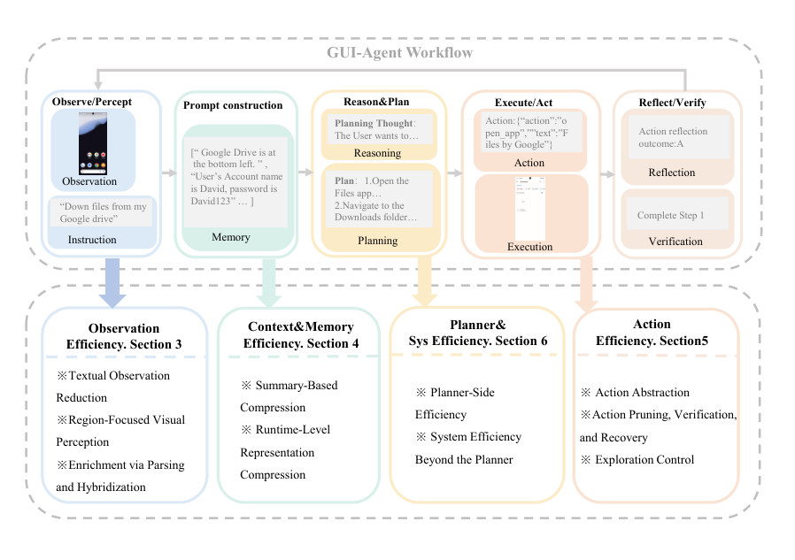
怎么读这张图
- 上排五格，从左到右是一步：顶上的灰线表示做完回到 Observe。
- Observe/Percept：截图 + 指令（图里是 “Down files from my Google drive”）。
- Prompt construction：把 Memory 里记下的东西拼进 prompt。
- Reason&Plan：先想（Planning Thought），再列计划（1. Open the Files app…）。
- Execute/Act：输出结构化 action（
{"action":"open_app",…}），再真的执行。 - Reflect/Verify：看结果，标 “Complete Step 1”。
- 下排四框：四个省法，箭头指回它省的那一格。
| 符号 | 是什么 | 在例子里 |
|---|---|---|
g | 用户的目标 | 建 SSH 用户，限一个文件夹 |
o_t | 这一步看到的界面：截图、DOM 或 accessibility tree | 这一步的截图 |
m_t | 留到这一步的历史 | 前面每步的截图、计划、反思 |
a_t | 这一步的动作 | 一次 click、type 或按键 |
v_t | 做完后的检查信号 | reflection：上一步生效了吗 |
s_t | 电脑的真实状态，agent 只能透过界面看 | 系统里有没有这个用户 |
一步 = 按目标、当前界面和留下的历史，选下一个动作（a_t ~ π(g, o_t, m_t)，综述 Eq. 1；v_t、s_t 见 App. A）。
flowchart TD G["Goal
建 SSH 用户"]:::example --> O["1 · Observe
截图，不调模型"] O --> P["2 · Plan
大模型：截图 + 全部历史"] P --> GR["3 · Ground
小模型：文字 → 坐标"] GR --> A["4 · Act
click / type / key"] A --> R["5 · Reflect
大模型：生效了吗"] R -->|"没做完"| O R -->|"做完，或到 50 步"| E["结束
50 步，40+ 分钟"]
Agent S2 的一步（OSWorld-Human §3）。UI-TARS-1.5 这类 native 模型把 2、3 合成一次调用，“observe-call-act” 的形状不变（§3.5）。
三家 API 是同一个 loop
Anthropiccomputer_toolset_20260801 | OpenAIcomputer | Googlecomputer_use | |
|---|---|---|---|
| 谁截图 | Claude 自己调 screenshot，app 回图片 | app 执行完再回截图 | app 每步截新图，放进 function_result |
| 模型回什么 | 一个或多个 tool_use（batch action） | computer_call，带有序的 actions[] | function_call（UI action） |
| 何时停 | Claude 不再要 tool，或到迭代上限 | 不再返回 computer_call | 不再有 function_call |
和 vanilla harness 的区别：loop 一样，差在模型和 harness
| 环节 | Vanilla harness | 现在的 CUA | 来源 |
|---|---|---|---|
| 模型 | 通用 VLM，被问“点哪” | 训练过，直接出坐标和动作；或大模型 plan + 小模型 ground | OSWorld-Human §2.1、§3 |
| 截图 | 每步必发整屏 | 模型决定何时 screenshot；zoom 只取一块原分辨率 | Anthropic docs |
| 每步动作 | 一个 | 一串：batch action、actions[] | Anthropic、OpenAI docs |
| 历史 | 全带，或每轮删一张 | cache breakpoint + 成批删 + compaction | Anthropic docs |
| GUI 之外 | 没有 | bash、text editor、code execution、MCP tool、AX | docs、HCU |
| Loop 形状 | observe → call → act | 一样 | OSWorld-Human §3.5 |
Level 2 · Stages · 问题 3
四个省法：少看、少记、每步多做、少想
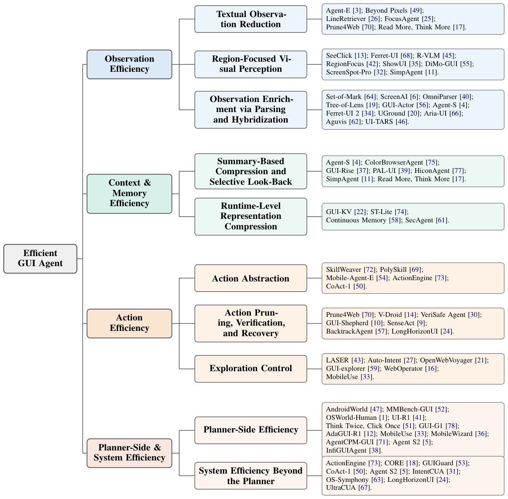
怎么读这张图
- 左数第二列四个色块：四大类，对应 Fig. 1 下排的四个框。
- 蓝 Observation：裁文本、只看一块区域、先解析再给模型。
- 绿 Context & Memory：历史换成摘要；serving 层压 cache。
- 橙 Action：动作抽象（skill、程序、code）；验证和恢复；探索控制。
- 浅橙 Planner-Side & System：planner 少想；planner 之外的 runtime。
- 最右列：每个子类下的论文。
flowchart LR T1["每次调用的 context
第 10 步带 9 张图"] --> S1["1 · 少看
裁树、zoom、diff"] T1 --> S2["2 · 少记
留最近 N 张、cache"] T2["步数
50 步 vs 人 3.9"] --> S3["3 · 每步多做
batch、code、程序"] T3["每步的调用
plan + reflect"] --> S4["4 · 少想
按需反思、分档"] click S1 href "#stage-1" click S2 href "#stage-2" click S3 href "#stage-3" click S4 href "#stage-4"
点击 stage 展开 Level 3 细节。左边三项就是 Problem 里的三个成本项。
Level 3 · Details
每个省法怎么做、省多少、赔什么
Stage 1 少看 · Observation 整屏截图 / 整棵树 → 够做决定的最小 observation
- Why：一张截图约 1,000–1,800 input tokens（Anthropic docs）；raw DOM 可到 800k tokens（Agent-E）。
flowchart LR a["整棵 AX tree
30,526 tokens"] --> b["裁剪
去空壳、合并、去重"] b --> c["紧凑 view
1,237 tokens"]:::win
HCU 在一个 Obsidian 窗口上的数（App. E.2，Fig. 15）。
| 手段 | 怎么做 | 报告的数 | 代价 · 来源 |
|---|---|---|---|
| 裁文本树 | 每步只取和任务相关的 AxTree 行（FocusAgent） | 平均少 50% 以上，封顶 2k tokens | 检索耗时未报告 · 综述 §3.1 |
| 提前筛候选 | 生成过滤程序筛 DOM 元素（Prune4Web） | 500 多个元素 → 不到 20 个 | 过滤程序的耗时未报告 · §3.1 |
| Zoom | 只放大一块：Anthropic zoom 回原分辨率 crop；RegionFocus 逐步放大 | — | RegionFocus：轨迹 overhead +66.8%，步数 +19.74% · §3.2 |
| 压 visual token | 只留和 UI 相关的 token（ShowUI） | 去掉 33%，训练快 1.4× | 端到端延迟未报告 · §3.2 |
| 降分辨率 | 截图缩小再发；token = ⌈宽/28⌉ × ⌈高/28⌉ | 建议 1024x768 或 1280x720 | — · Anthropic docs |
| 只回 diff | 动作后不重发整屏，只回变了什么（HCU 的 AX diff） | 见 E4 | AX 覆盖不全 · HCU §3.1 |
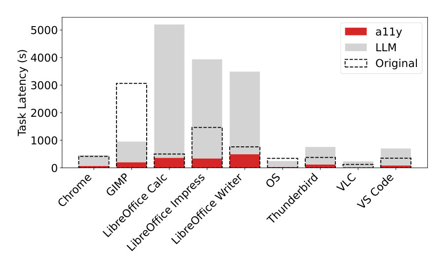
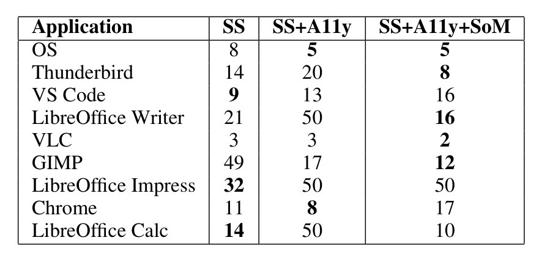
怎么读这张图
- Fig. 5 虚线框：只用截图时的任务时间。实心柱：加了 A11y tree 之后，红 = 生成树，灰 = LLM。
- LibreOffice Calc、Impress、Writer：实心柱远高于虚线框，加了树反而慢得多。GIMP 相反。
- Table 2：SS = 只用截图，SS+A11y = 加树，再加 SoM。粗体是该行最少的步数。
Running example 在这一步
OS 类抽样任务：只用截图 8 步，加 A11y tree 5 步。但 LibreOffice Calc 从 14 步变 50 步；生成树要 3–26 秒，每步还多几千 token（§3.3）。
Stage 2 少记 · Context & memory 全部历史 → 最近几张截图 + 文字记录 + cache
- Why：第 10 步的 prompt 带着第 1–9 步的截图、计划和反思（OSWorld-Human §3.2）。
flowchart LR a["留 4 张截图
337.1K input"] --> b["留 2 张
成功的 tool 不回图"] b --> c["219.5K input
准确率 34.5 → 30.6"]:::win
Screenshots or Tools? Table 2，每任务 input tokens。
| 手段 | 怎么做 | 报告的数 | 代价 · 来源 |
|---|---|---|---|
| 只留最近 N 张 | 旧截图删掉，每步一行的动作记录留着 | Google 参考实现留 3 轮；SoT 默认留 4 张 | 4 → 2 张：准确率 34.5 → 30.6 · SoT Table 2 |
| Prompt caching | breakpoint 放在 system prompt 和 tool 定义之后，再加最近几轮的最后一个 tool_result | cache read 是 input 价的 0.1 倍 | 前缀一变就失效 · Anthropic docs |
| 成批删 | 留最近 3 张，每 25 轮删一次，两次之间前缀不变 | — | 最新模型别在客户端删，改用 tool result clearing 或 compaction · docs |
| Drop-on-success | tool call 成功后，下一张截图换成一行占位文字 | 单用不省：342.4K vs 337.1K | “成功但没改”时丢掉唯一的视觉证据 · SoT §4 |
| 摘要 / diff | 历史换成进度摘要或页面 diff；SimpAgent 把一张历史截图压成 64 tokens | LLM 分支 FLOPs −27% | 摘要的开销未报告 · 综述 §4.1 |
| 压 KV cache | serving 层裁掉冗余 cache（ST-Lite） | 解码快 2.45×，端到端 1.40× | prefill 仍约 1.0× · 综述 §4.2 |
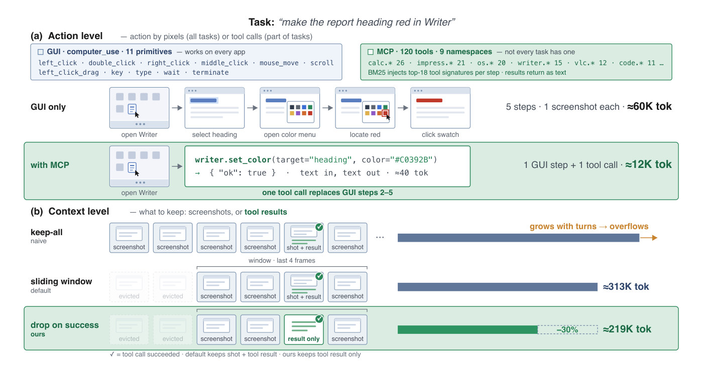
怎么读这张图
- (a) GUI only 一行：5 步，每步一张截图。with MCP 一行：1 步 GUI + 1 个 tool call。右侧 ≈60K、≈12K 是示意数（图注）。
- (b) keep-all：全留，一直涨。sliding window：只留最近 4 帧。
- (b) drop on success：打勾的那格只留 tool result，不留截图。≈313K、≈219K 对应 Table 2 的 313.1K 和 219.5K。
论文自己的例子（App. C）
Calc 任务 set A1 to 100：第 1 步看空表，发 libreoffice_calc.set_cell_value {"cell": "A1", "value": 100}；第 2 步只收到 {"ok": true, …}，截图被占位文字代替，模型结束。
Stage 3 每步多做 · Action 一步一个 click → 一串动作 / 一段代码 / 一个程序
- Why：每多一步就多一轮大模型调用；最好的 agent 步数是人的 2.7–4.3×。
flowchart TD a["一步一个 click"] --> b["Batch
一次回复多个动作"] a --> c["Code / tool
一次调用顶几步"] a --> d["编译成程序
重复任务不调模型"] b --> b2["OS 3.9 → 2.0 步"]:::win c --> c2["10.15 vs 15.22 步"]:::win d --> d2["314K → 0.64K tok"]:::win
三个数分别来自 OSWorld-Human Table 4（人工轨迹）、CoAct-1 对 GTA-1（综述 §5.1）、PACE 的 Calendar 任务（Table 5）。
| 手段 | 怎么做 | 报告的数 | 代价 · 来源 |
|---|---|---|---|
| Action grouping | 同一张截图上能连着做的动作一次发出：click 文本框 → type → Enter | 人工轨迹：OS 3.9 → 2.0，Calc 13.2 → 4.5 步 | 中途界面变了，后面的动作就错 · OSWorld-Human §4.2、§5.3 |
| 产品里的 batch | Anthropic 一次回复多个 action，按顺序跑，一个失败后面不跑；OpenAI actions[] | — | — · docs |
| AX 通道 | 用 ref（r12）指元素，不用坐标；一次 act 最多 64 个有序动作；wait 等状态出现 | 见 E4 | ref 过期就拒绝执行 · HCU §3 |
| Code / tool | 子任务交给写代码的 agent 或一个 tool | CoAct-1 平均 10.15 步，GTA-1 15.22，UI-TARS 14.90 | sandbox 开销未报告 · 综述 §5.1 |
| Skill | 重复操作收成可调用的函数（SkillWeaver、PolySkill） | 一个函数覆盖 2–5 个 GUI 步 | 找 skill 的开销未报告 · §5.1 |
| 编译成程序 | PACE：3 条成功轨迹 → 一个带参数的程序；之后每次只调一次模型抽参数 | ActionEngine：$0.71 → $0.06，model calls 10.2 → 1.8 | 编译贵，见 E6 · 综述 §5.1、PACE |
| 验证和回退 | 执行前给候选动作打分，错了能退回（V-Droid、BacktrackAgent） | V-Droid 每步 4.3 s，同类超过 20 s | verifier 开销没单列 · §5.2 |
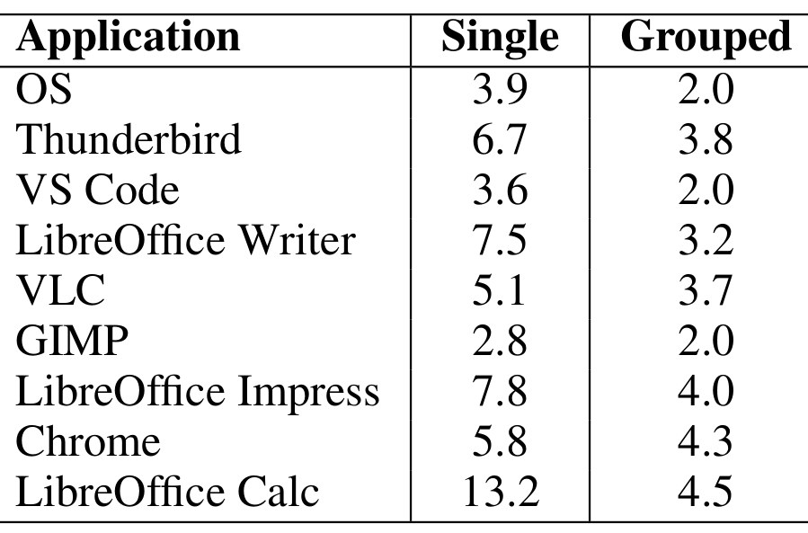
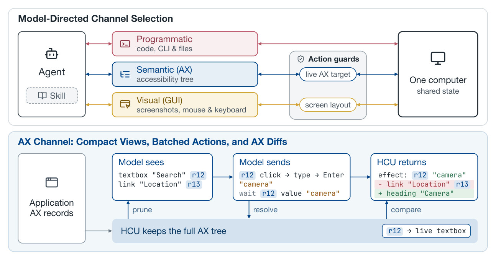
怎么读这张图
- 上半三条通道：红 Programmatic（code、CLI、files），蓝 Semantic（AX），黄 Visual（截图、鼠标、键盘）。模型自己选。
- Action guards：AX 动作前核对 ref 还指着活的元素；GUI 动作前核对窗口布局没变。
- Model sees：裁过的树，每个元素带 ref（
textbox "Search" r12）。 - Model sends：一次发
r12 click → type → Enter "camera"，再加wait r12 value "camera"。 - HCU returns：只回变化：少了
link "Location" r13，多了heading "Camera"。 - 底部：HCU 自己存整棵 AX tree，负责 prune、resolve、compare。
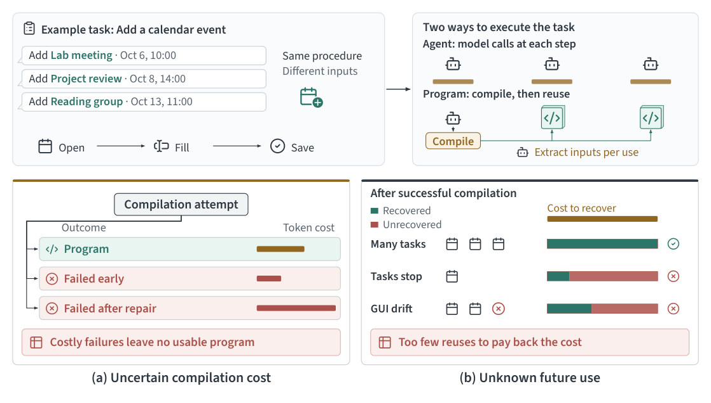
怎么读这张图
- 左上：同一个 procedure（Open → Fill → Save），三个不同输入（Lab meeting · Oct 6, 10:00 …）。
- 右上：Agent 每个任务每步都调模型；Program 先 Compile 一次，之后每次只 Extract inputs。
- 左下 (a)：编译可能失败（Failed early、Failed after repair），钱花了没有程序。
- 右下 (b)：要用够次数才回本；任务不再来，或 GUI 变了（drift），都收不回。
论文自己的例子（HCU Fig. 16，GPT-5.6 Sol，OSWorld 2.0）
搜疫苗：一次 act 对 r74 连做 click → CTRL+A → type Hepatitis B Vaccine - Express，回来一段 diff；再 find 得到 2 个匹配；再 act click r75。三次调用，图里没出现截图（这点是我的读法）。
Stage 4 少想 · Planner & system 每步全力推理 + 反思 → 按难度分配
- Why：GTA1 每步发 4 个并行 o3 planning call，平均 $2.43 / 任务，planning 占 87%（OSWorld-Human §3.4）。
flowchart LR a["每步全力想
4 个并行 o3 call"] --> b["按难度分配
反思按需、thinking 分档"] b --> c["坐标交给小模型
占时间 3.91%"]:::win
| 手段 | 怎么做 | 报告的数 | 代价 · 来源 |
|---|---|---|---|
| 按需反思 | reflection 分层，需要时才触发（MobileUse） | reflection overhead 降到 10% | 前期探索每个 app 最多 100 步 · 综述 §6.1 |
| 快慢两档 | 难的步才慢想（Think Twice, Click Once） | 慢想把处理时间从 2.6 s 抬到 5.4 s | 所以不能每步都用 · §6.1 |
| Thinking 档位 | API 参数直接调 | Anthropic（Sonnet 4.6、Opus 4.6）：别用 max，UI 任务上不提准确率 | — · docs |
| 大模型 plan，小模型 ground | 坐标交给 7B 级的 grounding 模型 | S2：grounding 占时间 3.91%，输出固定 12 tokens | ground 错会打转（GTA1 失败里 23%）· OSWorld-Human §3 |
| Routing | 每个动作路由到够用的最便宜模型（AVR） | 推算成本最多降 78% | 是推算值；只读了摘要 · arXiv 2603.12823 |
| Serving | prefix caching、speculative decoding | — | 列为 future work · OSWorld-Human §5.3 |
Running example 在这一步
SSH 任务的时间线上，绿（Planning）和黄（Reflection）铺满 40 多分钟；GTA1 每步多路 planning 再 judge，同一题时间几乎翻倍（§3.1）。
Recap：每个 idea 在哪体现
| Idea | 在哪体现 |
|---|---|
| Loop 的五个环节 | Big picture：S2 在 SSH 任务上的一步 |
| 大模型调用是瓶颈 | Problem 第 1 条；Stage 4；E1 |
| 历史让后面的步变慢 | Problem 第 2 条；Stage 2；E2 |
| 步数是人的 2.7–4.3× | Problem 第 3 条；Stage 3；E3 |
| Observation 能更小，但不免费 | Stage 1：OS 8 → 5 步，Calc 14 → 50 步 |
| Hybrid 通道 | Stage 3：HCU 的 r74 trace；E4 |
| Context 压缩 | Stage 2：set A1 to 100；E5 |
| 编译复用 | Stage 3：PACE 的 Calendar；E6 |
| 省法的代价 | Limits 的表 |
Results
先量出慢在哪，再看每个省法省多少、赔多少
E1–E3 量问题：时间、token、步数。E4–E6 量三个省法。比的是步数、token、时间和钱；成功率只当约束。
E1时间花在哪？OSWorld-Human §3.1
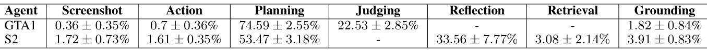
- 说明什么
- 大模型调用占掉绝大部分时间。S2：Planning 53.47% + Reflection 33.56%。GTA1：Planning 74.59% + Judging 22.53%。Screenshot、Action、Grounding 每项不到 4%。
- 在故事里
- 定位瓶颈：要快，先减大模型调用的次数和长度，不是截图或点击本身。
- 指标
- 每类子任务占任务总时间的平均百分比。
- 怎么评测
- 39 个 OSWorld 任务。
- S2：GPT-4.1 + UI-TARS-7B-DPO（grounding），上限 50 步。GTA1：o3 + GTA1-7B，上限 100 步。
- Grounding 模型跑在一张 A6000 上。
E2为什么越往后越慢？OSWorld-Human §3.2
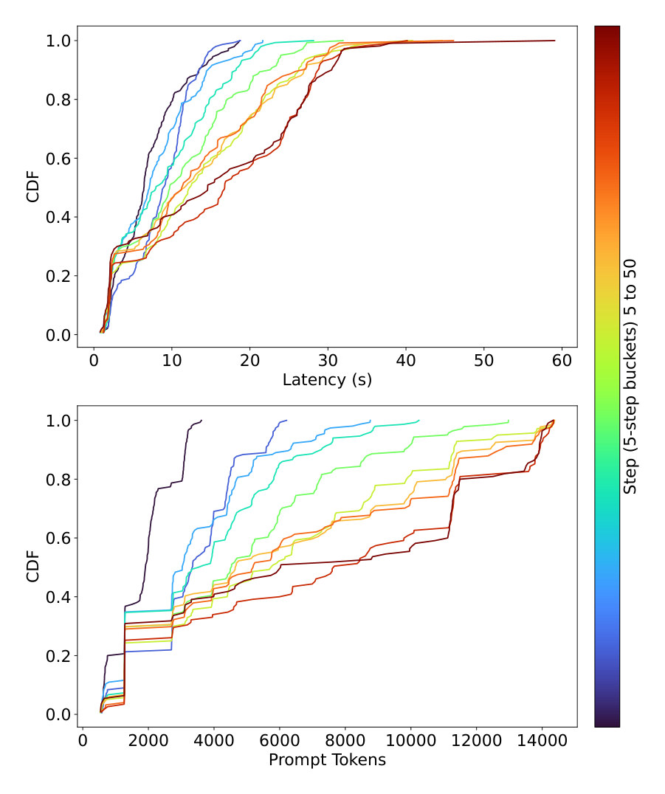
- 说明什么
- 每步的 prompt 随步数变长，延迟跟着涨。读图：最前面的线在 4,000 tokens 以内就到顶，最后面的线到约 14,000。论文：后面的步可以比开头慢 3×。
- 在故事里
- “历史全带上”的证据；延迟主要在 prefill。
- 指标
- 单步 LLM 调用的延迟和 prompt token 数的 CDF；每条线是连续 5 步的平均。
- 怎么评测
- Agent S2，同上 39 个任务。GTA1 的同类图是 Fig. 4。
E3比人多走多少步？OSWorld-Human §5
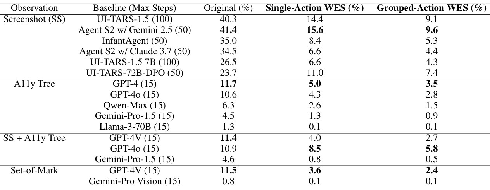
| 符号 | 是什么 |
|---|---|
t_human | 人做完这个任务需要的最少步数（OSWorld-Human 标注） |
t_agent | agent 实际走的步数 |
S | agent 的步数上限 |
- 说明什么
- 按步数打折后，分数掉到几分之一。Agent S2 w/ Gemini 2.5：41.4% → 15.6% → 9.6%，即 2.7× 和 4.3×。UI-TARS-1.5：40.3 → 14.4 → 9.1。
- 在故事里
- “步数太多”的证据。Grouped 一列：如果允许一步做一串动作，差距更大。
- 指标
- WES：成功的任务按 人的步数 ÷ agent 的步数（
t_human / t_agent）打折后取平均，再乘 1 − 失败任务的平均步数 ÷ 步数上限。 - 怎么评测
- 16 个 agent 在 OSWorld leaderboard 上公开的轨迹，全部 369 个任务。
- 人的轨迹由两名研究生标注、互相校验，并在 VM 里执行拿到成功。
- Single = 一步一个动作；Grouped = 同一张截图上能连做的算一步。
E4加 AX 和 code 通道省多少？HCU §4.3
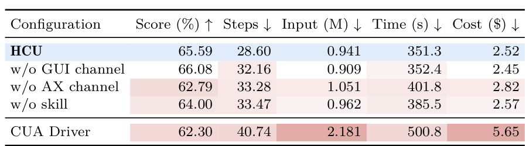
- 说明什么
- 分数不降，步数、token、时间、钱都少。HCU vs CUA Driver：Steps 28.60 vs 40.74（−29.80%），input 0.941M vs 2.181M（−56.85%），Time 351.3 vs 500.8 s（−29.85%），Cost $2.52 vs $5.65。Score 65.59 vs 62.30。
- 在故事里
- 同时用了 Stage 1（紧凑 view、diff）和 Stage 3（batch、三通道）。去掉 AX 通道损失最大：Score 62.79，Steps 33.28。
- 指标
- Score = OSWorld 1.0 成功率；Steps = 模型回复的次数；Input = 每任务 input tokens（百万）；Time 秒；Cost 美元。
- 怎么评测
- GPT-5.4，OSWorld 1.0。
- Baseline CUA Driver 本身已有 AX + 截图，不是纯截图 loop：这不是“对 vanilla 的提升”。
- 换模型结果不一：Claude Opus 5.5 的 Steps 只 −1%，Time +6%（它的 AX + GUI 调用里 94% 仍走 GUI）。
- OSWorld 2.0 + GPT-6 Astra：Cost $10.03 vs $10.05，基本没降。
E5少留截图要赔多少准确率？Screenshots or Tools? §4
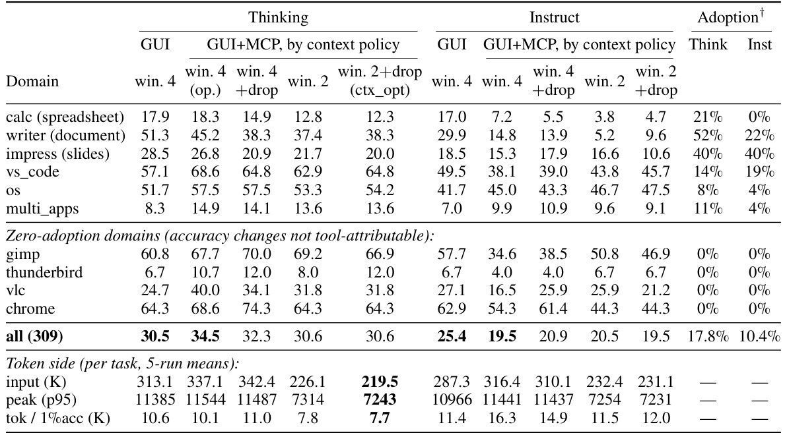
- 说明什么
- Token 省约三分之一，准确率掉约 4 个点。window-4：34.5% / 337.1K → window-2 + drop：30.6% / 219.5K；peak (p95) 11544 → 7243。单独 drop 不省（342.4K）。
- 在故事里
- Stage 2 的代价是可量的；省 token 主要靠缩窗口，不靠 drop。
- 指标
- 准确率 = OSWorld-MCP 309 个任务的成功率，5 次 run 平均；input (K) = 每任务 input tokens。
- 怎么评测
- 一个 8B 模型（Qwen3-VL-8B），上限 50 步。
- 按同一压缩规则重训（GRPO，74 个任务）后：53% 的 input 成本，没训过的 235 个任务上 +0.8pp（不显著）。
- 全集 37.8% vs 33.0% 里约 4.1pp 来自那 74 个训练任务。
E6编译成程序，几次回本？PACE §3
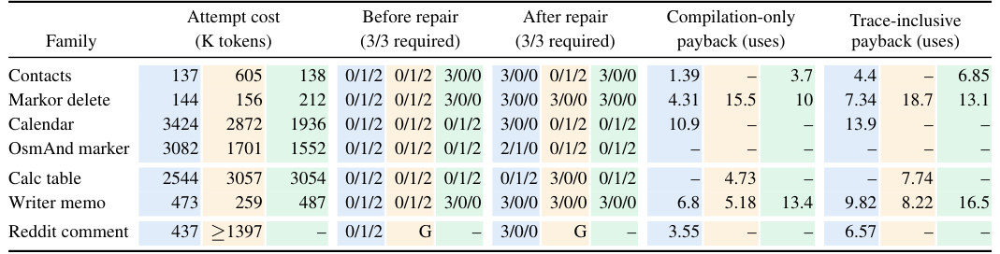
- 说明什么
- 单次几乎免费，但编译贵，要复用 2–16 次才回本。Calendar（GLM 5.3 Flash）：编译 3,424K tokens；agent 每次 314K，程序每次 0.64K；10.9 次回本，算上 3 条源轨迹是 13.9 次。20 次编译里 11 次通过验证。
- 在故事里
- Stage 3 “编译成程序”的账：只有重复够多的任务才值得。
- 指标
- Attempt cost = 一次编译花的 token（K，按价格加权）；Before / After repair = 3 个源任务 通过/失败/未测；payback = 省下的 token 盖过编译成本需要的使用次数。
- 怎么评测
- AndroidWorld 等任务族，三个模型。
- 同样 30 个输入：程序 30/30，agent 14/30。
- “比 ReAct 省 17.34%”是用录下的任务到达序列模拟的，不是真跑 GUI。
- 只算 token，不算延迟（§7）。
Limits
每个省法都把成本挪到了别处
| 省法 | 成本挪到哪 | 数 |
|---|---|---|
| Zoom | 多出来的推理和步数 | RegionFocus：overhead +66.8%，步数 +19.74% |
| 加 A11y tree | 生成树的时间，更长的 prompt | 3–26 s；Calc 14 → 50 步 |
| 少留截图 | 准确率 | 34.5 → 30.6 |
| Drop-on-success | 看不到“成功但没改” | regex 替换语义成功 0/23 |
| 每轮删截图 | cache 失效 | cache read 本来只要 0.1 倍价 |
| AX 通道 | 覆盖不全，仍要截图补 | Claude Opus 5.5：Time +6% |
| 编译成程序 | 前期成本、GUI drift、静默失败 | 3,424K tokens；11/20 通过 |
| 多路 planning + judge | 钱 | GTA1 $2.43 / 任务 |
- 记账不统一：综述的表里大量 NR；verifier、parser、多 agent 编排的开销没有共同的计价方式（综述 §7）。
- 没有同题对比：没有一篇把四个省法放在同一个任务上测；本页每个 stage 的例子来自各自的论文。
- 厂商自己也说慢：Anthropic 文档把 latency 列为第一条 limitation，建议用在不赶时间的场景。
- 本页没讲：prompt injection 等安全问题、模型怎么训练、mobile 专门的工作。
For LLM/Harness
对我们有什么用
- 先记账：
robot-harness的 Runtime 也是“看图 → 大模型 → 一个动作”。照 E1 把每步拆成 plan、reflect、ground、act 记时间和 token，放进 Supervisor evidence。 - Primitive 的接口：HCU 的
act（一串有序动作，第一个失败就停并报告做到第几个）和wait（等状态出现）可以直接借给VLA_ACT这类 primitive。 - Skill 值不值：PACE 的回本账（编译 3,424K tokens，10.9 次回本，11/20 通过）给“什么时候把轨迹固化成 skill”一个可算的标准。
Sources
读了什么
| 来源 | 读到哪 | 用在哪 |
|---|---|---|
| Efficient GUI Agents: A Systems Survey Bai et al. · arXiv 2609.02309v1 · 2026-09-02 | 全文 + 附录表 | Loop、四个省法、各方法的数 |
| OSWorld-Human Abhyankar, Qi, Zhang · UCSD · MLSys 2026 · v2 | 正文全文 | Running example、E1–E3 |
| Hybrid Computer Use (HCU) Wang et al. · Microsoft Research 等 · arXiv 2610.41432v1 | 正文 + 相关附录 | Stage 1、3，E4 |
| Screenshots or Tools? Fan et al. · UESTC、小红书等 · arXiv 2608.03327v2 | 正文 + App. C | Stage 2，E5 |
| When to Compile a Computer-Use Agent? (PACE) Ming et al. · CityU HK · arXiv 2610.02932v1 | 正文 + 相关附录 | Stage 3，E6 |
| Adaptive VLM Routing (AVR) Liu et al. · arXiv 2603.12823v1 | 只读摘要 | Stage 4 的 routing 一行 |
| Anthropic computer use tool、vision、prompt caching | 2026-11-22 访问 | Loop 表、batch、zoom、cache、删截图 |
| OpenAI computer use guide | 2026-11-22 访问 | Loop 表、actions[] |
| Gemini computer use、参考 agent | 2026-11-22 访问 | Loop 表、留 3 轮截图 |
综述里别的论文的数，都是综述转述的，没有逐篇回原文核对。